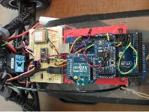

After much work with the Python OpenCV library and testing the image processing on the car, I've decided that I'll leave the computer vision part of this project for later. The simple line detection works well for images like the ones in my previous post. But for more complicated images, such as roads without yellow lane markers, line detection won’t be enough. I'm looking into using a neural network with OpenCV to keep the car on the road.
Now I am working on the steering. My goal is for the car to steer into the direction of the next waypoint from its current location. I also got a lot of new stuff for the car. Here's how it looks today. I upgraded to an Arduino mega (see below for why), Xbee for sending data wirelessly to my laptop, and a GPS module.
I spent a lot of time trying to get the steering working with the Arduino Uno. The problem is that the Uno only has one serial port. I was using this serial port for the Xbee communication. The GPS also needs a serial port, so I was running it by using the software serial library. However, the software serial works on interupts and the steering and esc need to have a constant signal.
What happened was that when the interupt for the GPS would come on, the signal for the servos would stop briefly. This problem caused some serious erratic behavior and resulted in the car jumping off of my workbench several times. The Arduino Mega (borrowed from my 3D printer) solved this problem by having 4 serial ports, which is more than enough for this project.
So for now I am getting all the code and computations done on the Arduino. I'll leave the computer vision and machine learning stuff for later on. I'm also thinking about replacing the Mega with a much faster ChipKit Max32, which uses a 80MHz PIC32 microcontroller. The Mega is working well now, but I'm worried that the 2D Kalman filter I plan on using for the localization will slow it down too much.
For the Arduino code: Right now I have the GPS data parsed. I also added a LED indicator on the board that is on whenever there is a valid GPS data stream. This is nice for when I'm not near the laptop to see if it has valid data. The GPS heading data and the gyro rate data are sent to a Kalman filter. The GPS heading is very slow. Visually, it seems to lag by 1-2 seconds. The car is capable of reaching up to 20mph, meaning that it could move nearly 60ft before getting a new heading update. To fix this problem, I am using the gyro rate in between those updates to correct the car's heading. So far, this is working but the updated heading is still lags a bit. I need to do some tuning on the Kalman filter to fix this. The car will turn toward the waypoint, but it ends up going in circles because the angle isn't updated fast enough.
The updated angle is also sent to a PID control with the integral and dervivative portions set to zero until I get the Kalman filter tuned. This will also need a lot of tuning later on. Here's the loop portion of the code below. I'll upload the rest on github later.
I also decided that I needed a way to regain control of the car if things started to go bad. There's a built-in Arduino library called PulseIn which can be used to measure a pulse position modulation (PPM) signal that put out by a radio receiver. The library can be difficult to work with. It stops the loop while measuring the time of the pulses and may completely stop the loop if it never seen the end of a pulse. This sounded like trouble, so I decided to keep it off of the main control board all together.
I have several smaller ATtiny85 microcontrollers that would be perfect for this job. I wrote a quick program to read in the PPM signal from the receiver. I gave the signal a bit of a range to avoid any false positives. Any signal outside of 1300-1700ms (the typical signal is around 1500ms) sends one of the pins on the ATtiny high. If the transmitter is on and in range, then the ATtiny should see 1500ms. If it goes out of range, then this will drop to zero. If I pull the trigger on the transmitter, it will also cause the value to go out of its set range.
In the main loop on the Mega, I added a part to read in the voltage coming from the pin on the ATtiny. A voltage higher than 1.0V either means that the car is out of range or that I triggered the stop button on the transmitter.
Comments !
comments powered by Disqus